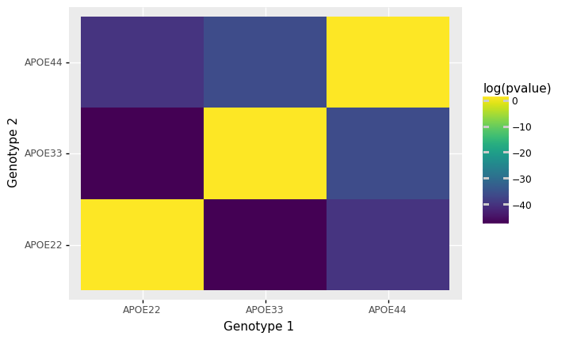

Brain Volume Analysis
Contents
Brain Volume Analysis#
import graspologic as gp
import hyppo
import matplotlib.pyplot as plt
import numpy as np
import pandas as pd
import seaborn as sns
from scipy.spatial.distance import squareform
from statsmodels.stats.multitest import multipletests
from pkg.data import (
GENOTYPES,
HEMISPHERES,
SUPER_STRUCTURES,
load_vertex_metadata,
load_volume,
)
## Read the data
data, labels = load_volume()
vertex_name, vertex_hemispheres, vertex_structures = load_vertex_metadata()
print(data.shape)
print(labels.shape)
(29, 332)
(29,)
Testing whether group volumes are significantly different#
We compute 3-sample distance correlation to see if there is any differences in the 3 groups. Specifically, we test whether the distribution of brain volumes from at least two genotypes are different.
ksample = hyppo.ksample.KSample("dcorr")
brain_volumes = [data[labels == genotype] for genotype in GENOTYPES]
stat, pval = ksample.test(*brain_volumes)
print(pval)
0.006007509501547217
We see significant difference among the three genotypes
Finding Signal Communities#
We stratify by hemisphere, super structure, then hemisphere + super structure
Testing for significant hemispheres#
hemisphere_volumes = []
for hemisphere in HEMISPHERES:
to_append = [
brain_volumes[idx][:, vertex_hemispheres == hemisphere]
for idx in range(len(GENOTYPES))
]
hemisphere_volumes.append(to_append)
# Run Dcorr
stats, pvals = [], []
for idx in range(len(hemisphere_volumes)):
to_test = hemisphere_volumes[idx]
stat, pval = ksample.test(*to_test)
stats.append(stat)
pvals.append(pval)
significant, corrected_pvals, _, corrected_alpha = multipletests(pvals, method="holm")
print(corrected_pvals)
[0.01730104 0.00929847]
Testing for significant super structures#
structure_volumes = []
for structure in SUPER_STRUCTURES:
to_append = [
brain_volumes[idx][:, vertex_structures == structure]
for idx in range(len(GENOTYPES))
]
structure_volumes.append(to_append)
# Run Dcorr
stats, pvals = [], []
for idx in range(len(structure_volumes)):
to_test = structure_volumes[idx]
stat, pval = ksample.test(*to_test)
stats.append(stat)
pvals.append(pval)
significant, corrected_pvals, _, corrected_alpha = multipletests(pvals, method="holm")
print(corrected_pvals)
[0.04506916 0.01793374 0.01793374 0.04506916 0.83478065]
Testing for significant regions#
# Run Dcorr
stats, pvals = [], []
ksample = hyppo.ksample.KSample("dcorr")
for idx in range(vertex_name.size):
to_test = [brain_volumes[jdx][:, idx : idx + 1] for jdx in range(len(GENOTYPES))]
stat, pval = ksample.test(
*to_test,
)
stats.append(stat)
pvals.append(pval)
significant, corrected_pvals, _, corrected_alpha = multipletests(pvals, method="holm")
print(pvals)
[0.20667033191212072, 0.15345316032851392, 0.03752993218026134, 0.5598786954281109, 0.09909753512313449, 0.13862172536721365, 0.03378263356723513, 0.1806511209061934, 0.2763029248993436, 0.30243435490514975, 0.20797274107173208, 1.0, 0.15874611345079176, 0.06326727945032981, 0.556399229935349, 0.06597039662124302, 0.5681540220660034, 0.10317860617489735, 1.0, 1.0, 1.0, 0.11446313495201856, 0.4016062224632988, 0.1330282755872462, 0.015464136530246194, 1.0, 0.10437533411063316, 0.04545181749070466, 0.371086742250629, 1.0, 0.07725279814889259, 1.0, 0.18684477716938608, 1.0, 0.01636552944013374, 0.006725989898696442, 0.09568546002414563, 0.24484180543103667, 0.04668008174709784, 0.11185340466084681, 1.0, 0.20798695390136204, 0.5914082687124695, 1.0, 0.265863127850386, 1.0, 0.23972671739555745, 0.019845608422675232, 1.0, 0.06161852150555486, 0.00845363473503148, 0.0007632568215107018, 0.36584042365549496, 0.04843295600209349, 0.48469340976280684, 0.3129821599355795, 0.07527576763791287, 1.0, 0.31188789234253295, 0.0630479486013571, 0.08467842662420337, 0.2626086924087813, 1.0, 0.03533509590010357, 0.2657133075574807, 1.0, 0.06900617337818175, 0.07645725121274399, 0.15411767359940576, 0.05596499651408337, 0.331790586488946, 0.11149173226061726, 0.4852360056769368, 0.015285216870377727, 1.0, 0.6662071402745726, 0.01423017659718439, 0.05676449763979862, 0.2997648672692625, 0.024834280265369962, 0.038106951987189795, 0.02103899003722916, 0.10937839074404969, 0.026560483679205476, 0.017623815955484217, 0.552674088894959, 0.25318831236215505, 0.10842693436796119, 0.2831265066502512, 0.045761335036729966, 0.09047682777020896, 0.32863527240725016, 0.25283740469985017, 0.18787012437605705, 0.1899453784890049, 0.18073052404271928, 0.00545665944730706, 0.08714052360971654, 0.007472767041270772, 0.23861810045925763, 1.0, 0.2479327814878616, 0.17757001840157416, 0.01080087086233384, 0.10567845021551989, 0.13485954719582502, 0.14200859950708566, 0.10176804259817723, 0.17082307332075936, 0.022355378829535564, 0.15121674694400392, 0.07838439208974965, 0.0012405767234442843, 0.12133530831836482, 0.028066583258388872, 0.044255834600303384, 1.0, 0.24544014575055192, 0.4250367723107362, 0.07626597493439205, 0.3489093736478486, 0.04670960690703816, 0.36956110097827655, 0.14053837703008445, 0.04714811938047363, 0.012201720267636825, 0.0744901262253766, 0.7865378930112675, 0.049855522555143576, 0.13359287234905562, 0.07289764020617077, 0.2186075604082552, 0.009668384425484648, 0.1688573803291915, 0.01553856110809007, 0.027198159160743775, 0.08012319404509148, 0.08327734969405494, 0.20282222357464566, 0.030834224567080747, 0.3261753738520848, 0.004091846636301522, 0.15544426913338144, 0.045913340905206296, 0.03481788262901426, 0.4912710539360371, 0.07869713351496367, 0.3690159837754895, 0.17503388538117848, 0.28713850495488336, 0.040828240789962424, 0.08909997019441109, 0.05820005389261102, 0.00939773630850034, 0.038934598669401285, 0.5235788839552076, 0.013681006831256727, 0.10139165633762283, 0.08717852878368902, 0.012681368227456772, 0.5953404351615412, 0.03215793911828519, 0.06935616965567118, 0.034377130803072246, 0.5413835142022807, 1.0, 0.1714597567900606, 0.0275330369966118, 0.008534065574385574, 1.0, 0.007772542766812987, 0.6142583791587688, 0.031151739553643736, 0.015519400828295804, 0.12180924422449836, 0.16682908317126505, 1.0, 0.35236021337479384, 0.1579788892468679, 1.0, 0.09687339516255075, 0.06909340116505054, 0.05057862286209901, 0.14385806338862686, 1.0, 0.13712143506033075, 0.3407186102401753, 0.25099359144110633, 0.15632467600964814, 0.3612069600030898, 0.10150532061984664, 0.1361529081631046, 0.4417055052595371, 0.0334903507614164, 0.6655496894927045, 0.21522557003410503, 0.3826056216740915, 0.29689350682708654, 0.44964745440712406, 1.0, 0.053645442361941985, 0.010777022806059031, 0.2572661768155822, 0.4293830271318376, 0.04025034889825655, 0.4908524986015965, 0.18543604628480284, 0.041755217632182075, 0.24832609940203515, 0.09843286186758816, 1.0, 1.0, 0.1229228228906997, 1.0, 0.07862584026505219, 0.3286191465967091, 0.007219324388978238, 0.0041724797325880985, 0.11623845543887164, 0.020339421769903908, 0.916241031353041, 0.20603652325002803, 0.04689924856082553, 0.35204232760271015, 0.11124351758923764, 0.02576310525623524, 0.017352366919078172, 0.42176252726919905, 0.7158586349929357, 0.23351319218624667, 0.043055565585983085, 0.07128668428806298, 0.460425915929368, 0.013685302258009931, 0.08059599777673569, 0.027741933954583933, 0.021343306150651605, 0.08534259944454634, 0.03331293575315816, 0.007362532276780517, 0.21872078713240092, 0.3201478023622397, 0.02551657459038806, 0.07648178504985606, 0.08223685510459525, 0.006052113941026697, 0.004264471009789287, 0.011213205444161876, 0.06631856306927308, 0.01842969294794835, 0.013011740333896312, 0.05884841675479189, 0.6601671694924527, 0.029841736444131385, 0.24706027575416928, 0.17084982824238715, 0.001744103823172467, 0.09532391875698196, 0.17377262997324072, 1.0, 1.0, 0.0036260975022064518, 0.041286514039105646, 0.024062245815433866, 0.01321818782169605, 0.027902752837456295, 0.011891548199056912, 0.1957156199184242, 1.0, 0.022240489400395073, 0.015044994656981964, 0.06714939292466118, 0.05295678583296169, 0.039633115877634316, 0.5612637266960466, 0.3598183634526857, 0.007350439432853039, 0.016710197364, 0.002678577030351204, 0.2285543833161538, 0.057424470277685734, 0.02993896135630228, 0.04198705487694433, 0.08809062097328588, 0.24030468739083466, 0.044222874671861284, 0.049368664571706904, 0.07761888669395131, 0.089854698899202, 0.038522207059002625, 0.11326602711425689, 0.03527414098188692, 0.012790522269642984, 0.13007568730688654, 0.06454064899234173, 0.05211562000768742, 0.08000295859816663, 0.16833534515661636, 0.02241461754621364, 0.23160708127376922, 0.08182101142321797, 0.16077902329076332, 0.32621835016269674, 0.01968137340585857, 1.0, 0.026813636530049624, 0.4208471180528097, 0.000590187983270558, 0.006639406156037568, 0.03645984477155808, 0.0256642281718057, 0.0236223936959106, 0.026332818343121452, 1.0, 0.25360664379567077, 0.22086488872572224, 0.17822916133735525, 0.5085511583891218, 0.00695117936113515, 0.36231950309841554, 0.135893197780357, 0.11521098632201554, 0.08135432531742834, 0.14662145657543418, 0.38861618871519665, 0.16334144642324278, 0.34907359317737585, 0.08283285872208528, 0.021919976745621055, 0.11850746793517349, 0.03504329321276779, 0.6245059543314636]
0.05 / 332
0.00015060240963855423
Testing for differences in the brain volume covariance#
Using similar procedure as above, we test whether the covariances are different among the genotypes. Prior to the 3-sample test, we use Omnibus embedding on the covariance matrices to obtain latent positions, which we then test for difference in distributions.
omni = gp.embed.OmnibusEmbed()
omni.fit([dat for (_, dat) in cor_dat.items()])
Xhats = omni.latent_left_
print(Xhats.shape)
(3, 332, 4)
ksample = hyppo.ksample.KSample("dcorr")
_, pval = ksample.test(*Xhats)
print(pval)
8.254124554923335e-26
We again see a significant difference in distributions
Testing for differences in pairwise covariances#
We then test for whether the distribution of each pair of genotypes are different.
genotypes = ["APOE22", "APOE33", "APOE44"]
ksample = hyppo.ksample.KSample("dcorr")
res = []
for i, g in enumerate(genotypes):
for j, h in enumerate(genotypes):
if g == h:
res.append([g, h, 1])
else:
_, pval = ksample.test(Xhats[i], Xhats[j])
res.append([g, h, pval])
pairwise_df = pd.DataFrame(res, columns=["Genotype 1", "Genotype 2", "pvalue"])
pairwise_df["Genotype 1"] = pairwise_df["Genotype 1"].astype("category")
pairwise_df["Genotype 2"] = pairwise_df["Genotype 2"].astype("category")
pairwise_df["log(pvalue)"] = np.log(pairwise_df["pvalue"])
pairwise_df
| Genotype 1 | Genotype 2 | pvalue | log(pvalue) | |
|---|---|---|---|---|
| 0 | APOE22 | APOE22 | 1.000000e+00 | 0.000000 |
| 1 | APOE22 | APOE33 | 9.932969e-21 | -46.058427 |
| 2 | APOE22 | APOE44 | 1.014474e-17 | -39.129576 |
| 3 | APOE33 | APOE22 | 9.932969e-21 | -46.058427 |
| 4 | APOE33 | APOE33 | 1.000000e+00 | 0.000000 |
| 5 | APOE33 | APOE44 | 3.573940e-16 | -35.567693 |
| 6 | APOE44 | APOE22 | 1.014474e-17 | -39.129576 |
| 7 | APOE44 | APOE33 | 3.573940e-16 | -35.567693 |
| 8 | APOE44 | APOE44 | 1.000000e+00 | 0.000000 |
plot = p9.ggplot(
p9.aes(x="Genotype 1", y="Genotype 2", fill="log(pvalue)")
) + p9.geom_tile(pairwise_df)
plot

<ggplot: (8766045953917)>